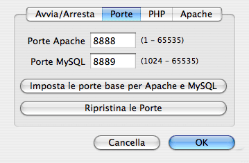
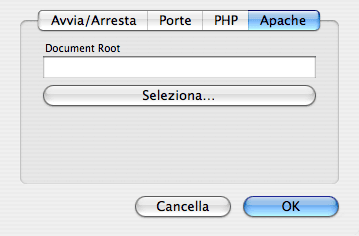

Aprire il terminale e scrivere quanto segue a macchina:/Applications/MAMP/Library/bin/mysqladmin -u root -p password <NEWPASSWORD>
Anziché <NEWPASSWORD>usare la nuova password d'accesso che si desidera.
In seguito si deve cambiare la password d'accesso per phpMyAdmin ed altri scripts che stanno funzionando sotto MAMP. Puoi cambiare la password d'accesso per phpMyAdmin nella file /Applications/MAMP/bin/phpMyAdmin-X.X.X/config.inc.php
Puoi cambiare le porte di comunicazione sotto le preferenze:

Di default, le pagine HTML e PHP devono essere copiate nella cartella htdocs situata in /Applications/MAMP. Questa cartella è chiamata "Document Root". Puoi cambiare la path della Document Root in MAMP sotto le preferenze:

Probabilmente hai regolato le porte di comunicazione di Apache inferiori alla 1024. Sotto un sistema UNIX, come Mac OSX, devi avere le porte al di sotto della 1024.